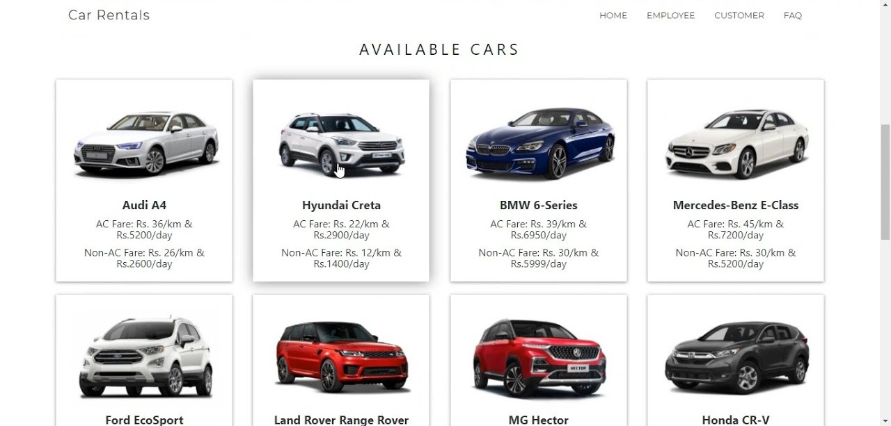

We used a customized ResNet-18 model to classify over 6000 breast cell images labeled with '_class0' for benign and '_class1' for malignant, and applied K-Means clustering on malignant cases to predict cancer stages, enhancing diagnostic accuracy through deep learning.
This project is a real-time chat application integrated into a portfolio website, built using Flask, Flask-SocketIO, and SQLite, allowing users to exchange messages instantly with live updates, username identification, and timestamped message storage using a backend database for persistent chat history.

A simple Car Rental Management system built using Python (Flask) with a responsive HTML/CSS frontend. Users can rent or return a car, view different car types, and manage rental records — all from a clean, attractive web interface.